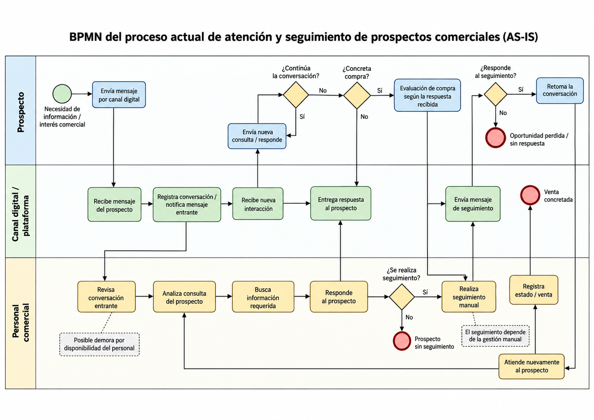
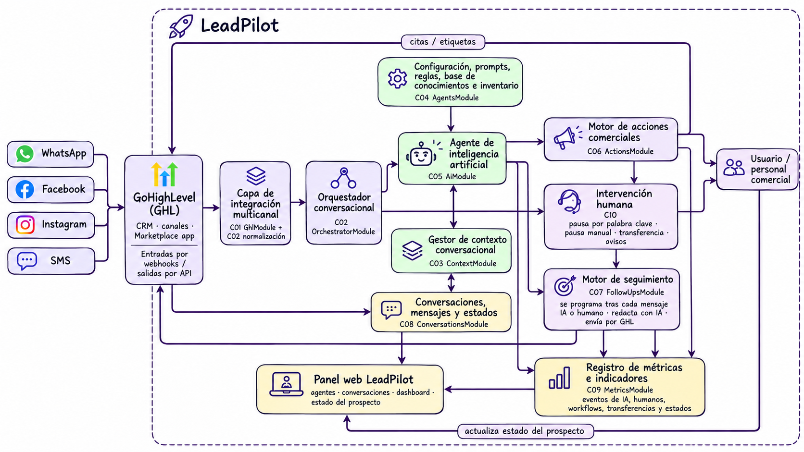
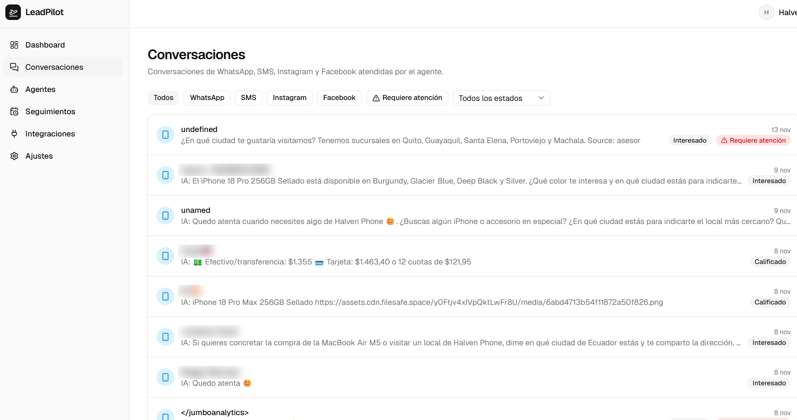
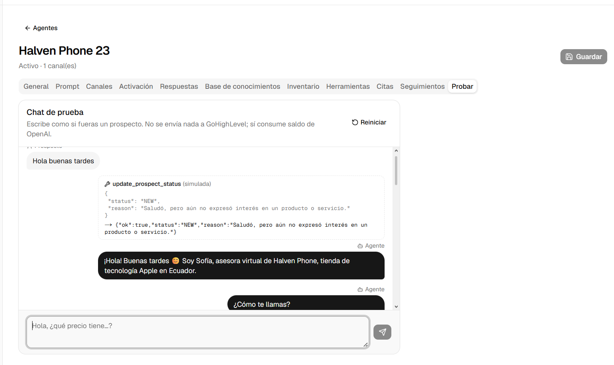
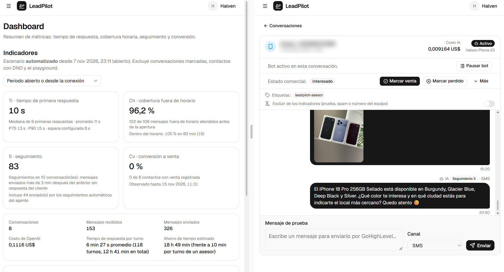

R6
UNIVERSIDAD TÉCNICA DE AMBATO
Facultad de Ingeniería en Sistemas, Electrónica e Industrial · Carrera de Software
Trabajo de titulación, modalidad Proyecto de Investigación, previo a la obtención del título de Ingeniero de Software
Autor: Hamilton Steven Jumbo Jumbo
Tutor: Ing. Hernán Fabricio Naranjo Ávalos, Mg.
Ambato – Ecuador · Diciembre 2026
Hamilton Jumbo · Defensa de titulación · UTA – FISEI · Carrera de Software
2
AGENDA
1
Introducción
Problema, contexto y antecedentes
2
Objetivos
General y específicos
3
Metodología
Enfoque, instrumentos, población
4
Desarrollo
Diagnóstico, diseño, Scrum–XP, LeadPilot
5
Resultados
Indicadores del piloto vs. línea base
6
Conclusiones
Conclusiones y recomendaciones
Hamilton Jumbo · Defensa de titulación · UTA – FISEI · Carrera de Software
3
INTRODUCCIÓN
Pérdida de oportunidades comerciales
Disponibilidad limitada del personal
42 h de 168 h a la semana
Gestión manual de canales dispersos
100 % pierde continuidad
Sin información centralizada ni historial
83,3 % sin registro del estado
Sin seguimiento estructurado
≤ 20 % recontactado
7×
más probabilidad de calificar un lead si se contacta en la primera hora
42 h
tiempo promedio de respuesta de las empresas auditadas (1,25 M leads)
Tarjetas: encuesta a SEVNEL (n = 12). 7× y 42 h: Oldroyd et al. (2011), HBR
Hamilton Jumbo · Defensa de titulación · UTA – FISEI · Carrera de Software
4
INTRODUCCIÓN
SEVNEL
Plataforma de gestión comercial integrada con GoHighLevel. Sus empresas clientes atienden prospectos por WhatsApp, Instagram y Facebook.
Lo que reportaron sus 12 integrantes:
6 / 12
fuera de horario, generalmente no se respondía
12 / 12
atención humana de hasta 8 horas diarias
12 / 12
como máximo el 20 % de prospectos sin compra recibía recontacto
¿De qué manera una aplicación basada en inteligencia artificial incide en la atención y seguimiento de prospectos comerciales digitales en empresas integradas a la plataforma objeto de estudio?
Pregunta de investigación
Hamilton Jumbo · Defensa de titulación · UTA – FISEI · Carrera de Software
5
ANTECEDENTES INVESTIGATIVOS
Variables abordadas en los antecedentes (n = 9)
Automatización
9
Disponibilidad 24/7
8
Mejora de conversión
8
Reducción de costos
7
Personalización
7
Satisfacción del cliente
6
Integración CRM
6
41 %
de los chatbots se implementa en ventas y 37 % en soporte
Misischia et al., 2022
β = 0,556
calidad de recuperación del servicio → satisfacción
Hsu y Lin, 2023
24/7
la disponibilidad continua es el principal diferenciador frente a la atención humana
Prasad et al., 2024
Hamilton Jumbo · Defensa de titulación · UTA – FISEI · Carrera de Software
6
OBJETIVOS
OBJETIVO GENERAL
Desarrollar una aplicación basada en IA para atención y seguimiento de prospectos comerciales digitales en las empresas integradas en la plataforma, evaluando su incidencia en el tiempo de respuesta, la cobertura horaria, el seguimiento y la conversión durante 2026.
OE1
Diagnosticar
el proceso actual de atención y seguimiento, identificando brechas de tiempo de respuesta, cobertura horaria, continuidad y seguimiento.
OE2
Diseñar
la arquitectura funcional y los requerimientos de la aplicación, según el proceso comercial, los canales y los indicadores.
OE3
Implementar y evaluar
la aplicación con indicadores comparativos entre el escenario de atención manual y el automatizado.
Hamilton Jumbo · Defensa de titulación · UTA – FISEI · Carrera de Software
7
METODOLOGÍA DE INVESTIGACIÓN
Enfoque mixto
Descriptiva
De campo
Bibliográfica-documental
Aplicada
Entrevista al CEO
Encuesta censal
Fichas documentales
Hamilton Jumbo · Defensa de titulación · UTA – FISEI · Carrera de Software
8
METODOLOGÍA DE INVESTIGACIÓN
Población finita: personal de SEVNEL
N = 12 → n = 12 (censo)
Dirección, ventas, administración, soporte, desarrollo e integraciones. Sin fórmula de muestreo por tamaño y accesibilidad.
Población infinita: conversaciones comerciales
n = Z²·p·q / e² = 384,16 ≈ 385
Tamaño referencial (Z = 1,96; p = q = 0,5; e = 0,05). En el piloto se analizaron 9 327 prospectos de 4 empresas (A–D), elegidas por conveniencia.
Validación y alfa de Cronbach
El cuestionario pasó de 15 ítems Likert a 29 preguntas tras la revisión del tutor. No se calculó un alfa de Cronbach global: el instrumento combina selección única y múltiple, estimaciones ordinales de distintos indicadores y escalas que no forman una dimensión homogénea. La consistencia se verificó con valores admisibles, consentimiento y categorías excluyentes.
Hamilton Jumbo · Defensa de titulación · UTA – FISEI · Carrera de Software
9
RESULTADOS OE1 · DIAGNÓSTICO
42
códigos (28 deductivos, 14 emergentes)
7
categorías
78
citas textuales
«No hemos tenido una empresa que responda en menos de cinco minutos»
E01-CEO, P4
Citas por código de brechas y factores asociados (31 citas)
Cobertura horaria
7
Seguimiento comercial
5
Carga operativa
4
Continuidad conversacional
3
Costo de personal
3
Pérdida de oportunidad
3
Tiempo de respuesta
2
Cierre presencial
2
Factor humano
1
Pico nocturno
1
Hamilton Jumbo · Defensa de titulación · UTA – FISEI · Carrera de Software
10
RESULTADOS OE1 · DIAGNÓSTICO
Personal que reporta la dificultad en la mayoría o todas las empresas (n = 12)
P5 Demora en primera respuesta
100,0 %
P6 Atención noches y fines de semana
100,0 %
P7 Pérdida de continuidad entre canales
100,0 %
P8 Solicitud repetida de información
66,7 %
P9 Prospectos sin nuevo contacto
100,0 %
P10 Registro del estado del prospecto
83,3 %
P11 Consultas repetitivas
100,0 %
Estimaciones de la atención manual
50 % / 50 %
primera respuesta de 5–15 min / 15–30 min
100 %
atención humana hasta 8 h diarias
100 %
seguimiento de 0 % a 20 %
100 %
valoró indispensables la cobertura, el historial y el seguimiento automático
Hamilton Jumbo · Defensa de titulación · UTA – FISEI · Carrera de Software
11
RESULTADOS OE1 · DIAGNÓSTICO
| Indicador | Valor de referencia | Origen |
|---|---|---|
| Primera respuesta en horario laboral | 16,25 minutos | P15 · CEO P4 |
| Primera respuesta fuera de horario | 24 h o más / no se respondía | P16 · CEO P16 |
| Cobertura horaria | 42 h semanales (25 % de 168 h) | P17, P18 · CEO P5 |
| Prospectos sin compra con seguimiento | 10 % (punto medio de 0–20 %) | P19 · CEO P7 |
| Tiempo hasta el seguimiento | 1,8 h cuando existía | P20 · CEO P18 |
| Conversión en ventas | 8,1 % (rango 0–20 %) | P21 · CEO P19 |
Media ponderada de puntos medios
x̄ = Σ fᵢ·mᵢ / Σ fᵢ
Ej.: (6·10 + 6·22,5) / 12 = 16,25 min
Las empresas no conservaban registros de su atención manual: cada valor es una estimación del personal, no una medición.
Hamilton Jumbo · Defensa de titulación · UTA – FISEI · Carrera de Software
12
RESULTADOS OE1 · DIAGNÓSTICO
B = | V_R − V_LB |
B1 · Tiempo de respuesta
15,25 min
por consulta en horario laboral; más de 23 h fuera de horario
B2 · Cobertura horaria
126 h
semanales sin atención humana (42 de 168 h)
B3 · Continuidad
Sin historial
unificado entre canales en la mayoría de las empresas
B4 · Seguimiento
≤ 20 %
de prospectos sin compra recontactados; sin seguimiento programado
Hamilton Jumbo · Defensa de titulación · UTA – FISEI · Carrera de Software
13
RESULTADOS OE1 · DIAGNÓSTICO
Probabilidad →
5
R6
R3 R4
R1 R2
4
R7
R5
3
2
1
1
2
3
4
5
Impacto →
| ID | Riesgo | P×I | Nivel |
|---|---|---|---|
| R1 | Demora en la primera respuesta | 25 | Crítico |
| R2 | Sin atención fuera del horario | 25 | Crítico |
| R3 | Falta de seguimiento | 20 | Crítico |
| R4 | Sobrecarga operativa | 20 | Crítico |
| R5 | Pérdida de contexto | 16 | Alto |
| R6 | Respuestas repetitivas | 15 | Alto |
| R7 | Sin trazabilidad del estado | 12 | Alto |
Hamilton Jumbo · Defensa de titulación · UTA – FISEI · Carrera de Software
14
RESULTADOS OE1 · DIAGNÓSTICO

1
Recepción → disponibilidad
El canal recibe al instante, pero la respuesta espera a una persona: 16,25 min o 24 h+.
2
Continuidad
Cada mensaje obliga a revisar de nuevo la conversación; colas y datos repetidos.
3
Después de no comprar
El seguimiento depende de que alguien recuerde al prospecto: ≤ 20 %.
Hamilton Jumbo · Defensa de titulación · UTA – FISEI · Carrera de Software
15
RESULTADOS OE2 · DISEÑO
Requerimientos funcionales
RF01 Recepción de conversaciones
RF02 Identificación del prospecto
RF03 Atención automatizada
RF04 Respuestas contextuales
RF05 Conservación del contexto
RF06 Estado del prospecto
RF07 Seguimiento automatizado
RF08 Registro de seguimientos
RF09 Intervención humana
RF10 Registro de métricas
RF11 Gestión multicanal
RF12 Resultado comercial
Requerimientos no funcionales
RNF01 Rendimiento: ≥ 90 % en < 1 min
RNF02 Disponibilidad 24 h
RNF03 Trazabilidad
RNF04 Seguridad
RNF05 Privacidad
RNF06 Integridad del contexto
RNF07 Interoperabilidad
RNF08 Escalabilidad
RNF09 Consistencia
RNF10 Usabilidad
Hamilton Jumbo · Defensa de titulación · UTA – FISEI · Carrera de Software
16
RESULTADOS OE2 · DISEÑO
BACKEND
NestJS 11 + TypeScript
API, un módulo por componente
FRONTEND
Next.js 16 + React 19
Panel web de las empresas
BASE DE DATOS
PostgreSQL 16
Conversaciones, mensajes y métricas
COLAS
Redis 7 + BullMQ
Mensajes en cola y seguimientos
PLATAFORMA COMERCIAL
GoHighLevel
WhatsApp, FB, IG, SMS, citas
INTELIGENCIA ARTIFICIAL
OpenAI (modelos GPT)
Interpretación, respuestas y herramientas
CONTENEDORES
Docker
Entorno de desarrollo
DESPLIEGUE
Render + Vercel
API, BD y Redis; aplicación web
Hamilton Jumbo · Defensa de titulación · UTA – FISEI · Carrera de Software
17
RESULTADOS OE2 · DISEÑO

Entrada
C01 Integración multicanal · C02 Orquestador
Procesamiento
C03 Contexto · C04 Configuración · C05 Agente IA
Negocio
C06 Acciones · C07 Seguimiento · C10 Intervención humana
Información
C08 Gestor de información · C09 Métricas
Hamilton Jumbo · Defensa de titulación · UTA – FISEI · Carrera de Software
18
RESULTADOS OE2 · DISEÑO
El agente recibe en cada turno
1
Instrucciones del sistema
2
Información de la empresa
3
Historial (últimos 20 mensajes)
4
Estado del prospecto
5
Reglas de negocio
6
Herramientas disponibles
Modelo gpt-6-luna · salida JSON · espera de 5–10 s para un ritmo humanizado · respuestas en 1–3 mensajes
Pasa a un asesor humano cuando…
Llega un comprobante de pago
La IA no puede validar el depósito
Falta la información
«La IA no me debe inventar un precio»
El cliente lo pide o hay error
Se pausa el bot y se avisa al asesor
Hamilton Jumbo · Defensa de titulación · UTA – FISEI · Carrera de Software
19
METODOLOGÍA DE DESARROLLO
Scrum · gestión
XP · construcción
| Integrante | Scrum | XP |
|---|---|---|
| CEO de SEVNEL | Product Owner | Cliente |
| Tutor | Scrum Master | Coach |
| Autor | Developer | Programador |
| Tester | Developer | Tester |
¿Por qué este enfoque?
Hamilton Jumbo · Defensa de titulación · UTA – FISEI · Carrera de Software
20
RESULTADOS OE3 · IMPLEMENTACIÓN
0
Sprint 0
24 ago – 9 oct
Diagnóstico, requerimientos, arquitectura, backlog
1
Sprint 1
12 – 16 oct
Base, integración GoHighLevel y agente de IA
2
Sprint 2
19 – 23 oct
Control humano, métricas, despliegue, acciones
3
Sprint 3
26 – 30 oct
Citas, avisos a asesores, inicio de evaluación
4
Sprint 4
2 – 8 nov
Operación del piloto y cierre de datos
Velocidad (puntos de historia terminados)
77
84
16
3
Sprint 1
Sprint 2
Sprint 3
Sprint 4
Hamilton Jumbo · Defensa de titulación · UTA – FISEI · Carrera de Software
21
RESULTADOS OE3 · IMPLEMENTACIÓN
478
pruebas en 55 suites con Jest
406
unitarias
72
de integración con PostgreSQL
67,57 %
cobertura de líneas (unitarias)
Pruebas por módulo (unitarias + integración, principales)
C04 Base de conocimientos
54
C01 GoHighLevel
51
C07 Seguimiento
43
C09 Métricas
38
C02/C08 Conversaciones
37
C04 Inventario
36
C10 Control humano
33
C06 Acciones
29
Hamilton Jumbo · Defensa de titulación · UTA – FISEI · Carrera de Software
22
RESULTADOS OE3 · IMPLEMENTACIÓN

Conversaciones multicanal por empresa, con autor de cada mensaje (IA o humano)

Editor del agente: prompt, canales, seguimientos, base de conocimientos, inventario y chat de prueba
Hamilton Jumbo · Defensa de titulación · UTA – FISEI · Carrera de Software
23
RESULTADOS OE3 · IMPLEMENTACIÓN

En la misma interfaz
Hamilton Jumbo · Defensa de titulación · UTA – FISEI · Carrera de Software
24
DEMOSTRACIÓN
Espacio para pegar el video de la demo, capturas o el enlace a la presentación interactiva en HTML
Hamilton Jumbo · Defensa de titulación · UTA – FISEI · Carrera de Software
25
RESULTADOS OE3 · EVALUACIÓN
Tiempo de primera respuesta
Manual (estimado)
16,25 min
Piloto (medido)
35,1 s
mediana · 96,9 % en menos de 1 min
Cobertura fuera de horario
Manual (estimado)
24 h o más
Piloto (medido)
98,7 %
turnos fuera de horario atendidos antes de la apertura
Seguimiento a prospectos sin compra
Manual (estimado)
10 %
Piloto (medido)
72,5 %
recibió al menos un recontacto (1,66 en promedio)
Conversión en ventas
Manual (estimado)
8,1 %
Piloto (medido)
0,6 %
58 ventas registradas · comparación pendiente
Hamilton Jumbo · Defensa de titulación · UTA – FISEI · Carrera de Software
26
RESULTADOS OE3 · EVALUACIÓN
| Indicador | A | B | C | D |
|---|---|---|---|---|
| Conversaciones | 8 873 | 297 | 160 | 7 |
| Tr mediana (s) | 35,2 | 19,3 | 5,7 | 10,7 |
| Respuestas < 1 min | 97,1 % | 93,2 % | 95,2 % | 100 % |
| Ch fuera de horario | 99,1 % | 84,9 % | 91,8 % | 97,8 % |
| S recontacto | 74,8 % | 6,4 % | 65,6 % | 85,7 % |
| Ventas | 58 | 0 | 0 | 0 |
| Citas creadas | 122 | 4 | 8 | 0 |
La Empresa A concentra el 95 % de las conversaciones; D operó menos de un día.
Mensajes de prospectos por franja (38 018)
3,4 %
5,2 %
21,6 %
25,8 %
25,0 %
19,0 %
00–04
04–08
08–12
12–16
16–20
20–24
56 % de los turnos ocurrió fuera del horario laboral
Hamilton Jumbo · Defensa de titulación · UTA – FISEI · Carrera de Software
27
DISCUSIÓN
Frente a la literatura
35,1 s
vs. 42 h promedio (Oldroyd, 2011) y 3,4 s de un chatbot AIML (2018)
56 %
de turnos fuera de horario confirma la disponibilidad 24/7 como diferenciador
Calidad
la disponibilidad sola no garantiza ventas: importan la calidad y la resolución (Rita, 2026)
Limitaciones
1
Fuentes distintas
Manual estimado vs. automatizado medido: no permite atribuir causalidad
2
Período corto
10,5 días en A, B y C; menos de un día en D
3
Concentración
Empresa A = 95 % de conversaciones; horario de B asignado por defecto
4
Sin derivaciones
Cero eventos: el control humano no se evaluó con casos reales
Hamilton Jumbo · Defensa de titulación · UTA – FISEI · Carrera de Software
28
CONCLUSIONES
OE1
La atención manual dependía del personal: 16,25 min de primera respuesta, 126 h semanales sin atención y como máximo 20 % de seguimiento. Cuatro riesgos críticos.
OE2
12 RF y 10 RNF cubiertos por 10 componentes, con flujo común para WhatsApp, Facebook, Instagram y SMS a través de GoHighLevel.
OE3
LeadPilot se implementó con Scrum–XP y 478 pruebas aprobadas. Primera respuesta: 16,25 min estimados frente a 35,1 s medidos; fuera de horario: 24 h o más frente a 98,7 % atendido; seguimiento: 10 % frente a 72,5 %.
Por primera vez, las empresas participantes cuentan con indicadores medidos de su atención. Se implementó la aplicación y su evaluación comparativa se cumplió parcialmente.
Hamilton Jumbo · Defensa de titulación · UTA – FISEI · Carrera de Software
29
RECOMENDACIONES
1
Medir la línea base
Conectar los canales antes de activar la IA para registrar el escenario manual
2
Verificar en operación
Respuestas por WhatsApp, Facebook e Instagram, citas, derivación y ventas presenciales
3
Extender el período
Obtener valores representativos de todas las empresas
4
Fortalecer la seguridad
Cookie protegida, dependencias actualizadas, pruebas de frontend y LOPDP
5
Replicar la metodología
Clínicas, educación, turismo, inmobiliarias y cooperativas
6
Adaptar indicadores
Conservar Tr y Ch; cambiar S y Cv por citas, matrículas o reservas
Preguntas y observaciones del tribunal
Hamilton Steven Jumbo Jumbo · Carrera de Software · FISEI – UTA